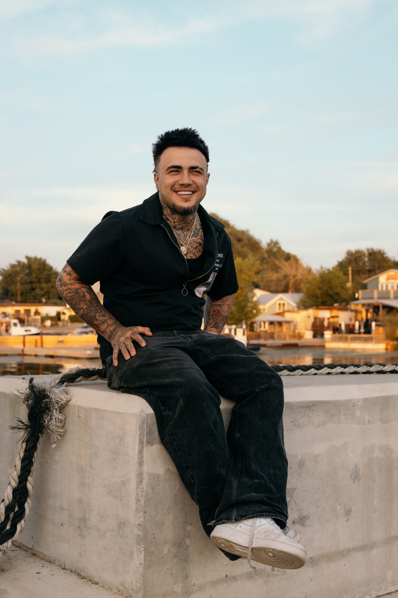

Ben Fusco
Founder · Photographer · Videographer · Editor
Ben is the creative lead and primary point of contact from planning through delivery. His approach combines honest storytelling, calm direction, and clean, cinematic editing.
Behind the Work
Ben leads every project, with Max and Jordan supporting coverage, client communication, and larger productions.
Founder · Photographer · Videographer · Editor
Ben is the creative lead and primary point of contact from planning through delivery. His approach combines honest storytelling, calm direction, and clean, cinematic editing.
Second Photographer · Production Support
Max joins selected weddings, events, and larger productions to capture alternate angles, candid moments, and additional coverage alongside Ben.

Photographer · Sales & Client Relations
Jordan supports select shoots and helps new clients understand services, packages, and next steps. Ben remains the creative lead and final point of contact for every booking.